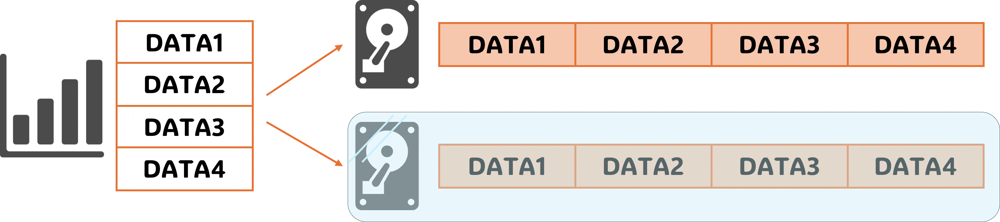
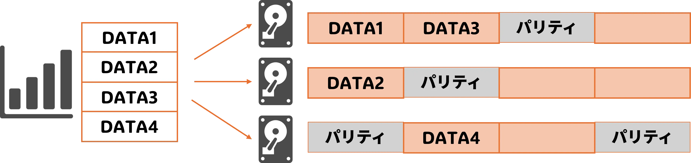

Ver. 2025.07.14. 伊東颯紀
基本情報技術者試験
RAID
RAID とは, Redundant Array of Inexpensive Disks の略で「レイド」と読みます.
直訳すると, "安価ディスクの冗長な列" となり, 名前の通り複数のハードディスクを組み合わせることで速度や信頼性を向上させる技術です.
その組み合わせ方次第で RAID0 ~ RAID6 の 7種類 に分かれており, 基本的に数字が大きくなるほど現代技術に近くなります. 以下に代表例を掲載します (RAID2, RAID6の説明は割愛).
その組み合わせ方次第で RAID0 ~ RAID6 の 7種類 に分かれており, 基本的に数字が大きくなるほど現代技術に近くなります. 以下に代表例を掲載します (RAID2, RAID6の説明は割愛).
・RAID0 (ストライピング)
RAID0は, ストライピング(縦縞) とも呼ばれます. 2台のディスクに分散して書き込むのが特徴で, 高速化が図れる反面, 信頼性は低いです.
・RAID1 (ミラーリング)
RAID1は, ミラーリング(鏡写し) とも呼ばれます. 2台のディスクに同じデータを書き込むのが特徴で, 使えるディスク領域は半分以下になりますが, 信頼性が高いです. ・RAID10 (RAID0+1 または RAID1+0)
RAID10は, RAID0とRAID1を組み合わせたものです. 両者を組み合わせることにより, 互いのデメリットを打ち消し合うのが狙いです. 下図では, ストライピングをしたものをミラーリングしています (逆でも可).
・RAID3, RAID4
RAID3, RAID4では, 3台以上のディスクを使って, データを分散させる(ストライピング)と同時に, パリティという誤り訂正符号を専用のディスクに書き込むことで信頼性も担保します.RAID3はビット単位, RAID4はブロック単位という違いがあります.
・RAID5
RAID5では, 3台以上のディスクを使って, データと同時にパリティも分散させて書き込みます. 例題
RAIDの分類において, 4台以上のハードディスクを用いられており,
データの耐障害性が高く, 高速性を求めるデータベースなどのビジネスシーンでよく利用されるものは何か.
方針）
RAIDの分類は以下の表のようになっています. これをもとに, 当てはまるものを考えましょう.
| ストライピング | ミラーリング | ストライピング単位 | データ訂正符号 | 冗長ディスク構成 | |
|---|---|---|---|---|---|
| RAID0 | ○ | × | ブロック | - | - |
| RAID1 | × | ○ | - | - | - |
| RAID10 | ○ | ○ | ブロック | - | - |
| RAID2 | ○ | × | ビット | ハミング | 固定 |
| RAID3 | ○ | × | ビット | パリティ | 固定 |
| RAID4 | ○ | × | ブロック | パリティ | 固定 |
| RAID5 | ○ | × | ブロック | パリティ | 分散 |
| RAID6 | ○ | × | ブロック | パリティ | 分散 |
解）
"データの耐障害性が高く" から, ミラーリングを使用している, もしくはデータ訂正を行っていることが分かります.
また, "高速性を求める" ことから, ストライピングも併用されている RAID10 が解答になります.